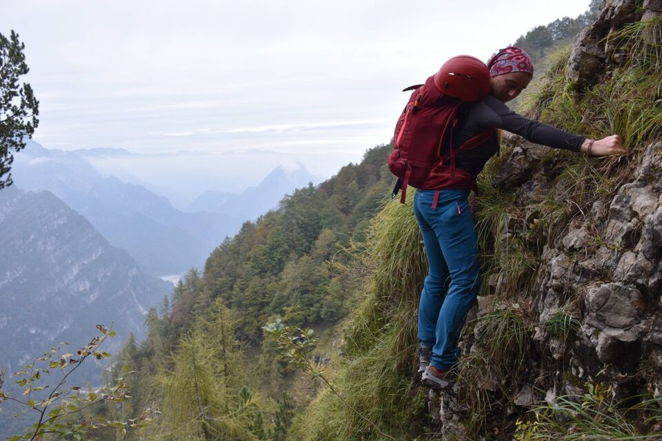
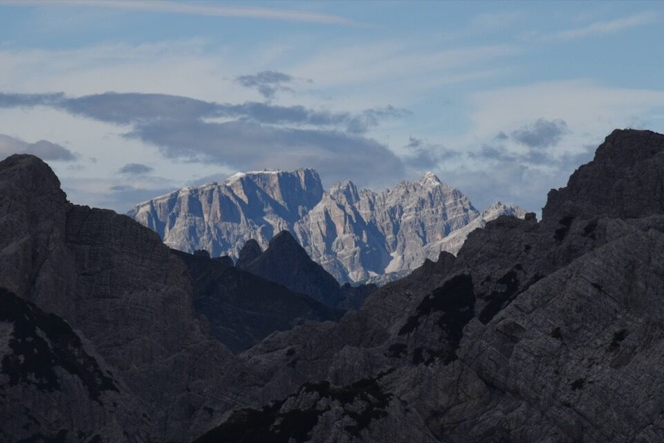

Anello di grande bellezza e valore storico, sugli antichi percorsi dei cacciatori tramontini e clautani.
Partiti col tempo plumbeo, siamo arrivati in cima con una luce e un cielo di una bellezza commovente: una di quelle giornate che non si dimenticano.
L'alba illumina il Cornaget, salito il fine settimana scorso da questo versante.
Luce fu: e che luce!
Da Caserata scendiamo andando in cerca della fantomatica Cengla.
Visioni selvagge verso i recessi orientali del Dosàip.
Il tratto piú stretto e bello della Cengla dal Giracûl.

Ecco là il coston de la thorla che ci apprestiamo a risalire.
Il mitico landre da la thorla.
Versante Est del Dosàip, impressionante.
Il ripido costone obbliga anche ad un passaggio impegnativo.
Maglina, Rupat e Spicion.
Dalla quota q1815: visione grandiosa!
Tempo strano, ma non potrebbe essere piú affascinante.
Lis Palis di Maglina.
Siamo indecisi se traversare tutti i prati, salire sul Domanzon e scendere per «le cuole» oppure se salire per la via de la Bisa: beh dai, già che siamo qua, via su!
Il primo salto, non difficile.

Piú in alto un secondo salto: verrebbe naturale aggirarlo a dx per prati ma il passaggio si rivela poco agevole, quindi noi abbiamo scalato direttamente il salto (II, roccia solida).


Puntando verso il cielo.
In cima al Dosàip per la seconda volta.
Il tempo è piú che splendido!
Cima Leadicia emerge dalle nubi.
Laggiú i colossi delle Dolomiti Settentrionali: Popèra e Cima Bagni!
Grandiosa visione delle Caserine.
Il gruppo di cime che circonda il Ciol de la Frata.
Cima Prendera, che mi piacerebbe salire dritto per dritto da Sud, con dietro Turlon e Cima dei Preti.
Il bellissimo e solitario Cadin di Dosàip.
L'articolata e selvaggia parete Sud delle cime Podestine-Meda che con Greta ho salito pochi mesi fa.
Casera Dosàip: uno dei luoghi piú affascinanti che io conosca.
Foto straordinaria di casera Dosàip, che mai avrei pensato di trovare (!), presa dal libro Guide alpine, portatori e portatrici nelle Prealpi Clautane (1874-1915) di Mario Tomadini (2025).
In qualche soffitta ci sarà pure una foto dello stavolo Sbrici? Lasciatemi sperare...